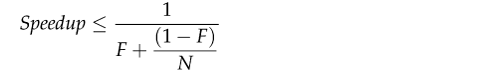

活跃性问题
我们通过加锁来确保线程安全，但是如果过度使用加锁，可能引起死锁。我们通过信号量和线程池，来限制对有限资源的使用，但是在有些情况下，这也可能造成死锁。
Java程序无法自动从死锁状态恢复，所以我们在设计程序时候，要找到可能导致死锁的条件。
死锁
经典的死锁问题就是哲学家进餐问题。
有些筷子管理算法能够让每个人都吃到东西，但有些算法可能导致一部分或者所有哲学家都饿死。
后一种情况就是死锁：每个人拥有其他人需要的资源，同时又等待其他人已经拥有的资源，并且每个人在获得所需要的所有资源前都不会放弃已经拥有的资源。
顺序死锁
如果所有线程都按照固定的顺序来获得锁，那么就不会出现顺序死锁问题。
如果想要验证锁的顺序的一致性，需要对程序中的加锁行为进行全局分析。
动态的顺序死锁问题
有时候并不是可以很清楚的知道是否会发生顺序死锁。1
2
3
4
5
6
7
8
9
10
11
12
13// DeadLock！
public void transferMoney(Account fromAccount, Account toAccount, DollarAmout amount) throws InsufficientFundsException {
synchronized (fromAccount) {
synchronized (toAccount) {
if (fromAccount.getBalance().compareTo(amount) < 0) {
throw new InsufficientFundsException();
} else {
fromAccount.debit(amount);
toAccount.credit(amount);
}
}
}
}
transferMoney在什么时候会发生死锁？看起来线程是按照相同的顺序来加锁的，但事实上，加锁的顺序取决于传入参数的顺序。
A: transferMoney(myAccount, yourAccount, 10);
B: transferMoney(yourAccount, myAccount, 20);
要解决上面的问题，则一定要定义锁的顺序。比较直观的，就是在要加锁的所有参数上做一个排序。可以使用System.identityHashCode方法，该方法返回Object.hashCode的返回值。
下边是一个经典的解决方法1
2
3
4
5
6
7
8
9
10
11
12
13
14
15
16
17
18
19
20
21
22
23
24
25
26
27
28
29
30
31
32
33
34
35
36
37
38private static final Object tieLock = new Object();
public void transferMoney(final Account fromAcct, final Account toAcct, DollarAmount amount) throws InsufficientFundsException {
class Helper {
public void transfer() throws InsufficientFundsException {
if (fromAcct.getBalance().compareTo(amount) < 0)
throw new InsufficientFundsException();
else {
fromAcct.debit(amount);
toAcct.credit(amount);
}
}
}
int fromHash = System.identityHashCode(fromAcct);
int toHash = System.identityHashCode(toAcct);
if(fromHash < toHash) {
synchronized (fromAcct) {
synchronized(toAcct) {
new Helper().transfer();
}
}
} else if (fromHash > toHash) {
synchronized (toAcct) {
synchronized(fromAcct) {
new Helper().transfer();
}
}
} else {
synchronized(tieLock) { // 极少数情况下，两个对象可能有相同的HashCode，通过一个‘加时赛’锁，保证每次只有一个线程会处理这种情况，避免死锁
synchronized (fromAcct) {
synchronized(toAcct) {
new Helper().transfer();
}
}
}
}
}
协作对象之间发生死锁
有些获取多个锁的操作并不像之前的例子那么明显，两个锁可能不是在同一个方法中被获得的。在持有所锁的情况下调用外部的方法，需要警惕死锁。1
2
3
4
5
6
7
8
9
10
11
12
13
14
15
16
17
18
19
20
21
22
23
24
25
26
27
28
29
30
31
32
33
34
35
36
37
38
39// DeadLock！ Don't do this
class Taxi {
("this") private Point location, destination;
public Taxi(Dispatcher dispather) {
this.dispather = dispather;
}
public synchronized Point getLocation(){
return this.location;
}
public synchronized void setLocation(Point location) {
this.location = location;
if(location.equals(destination))
dispathcher.notifyAvaiable(this);
}
}
class Dispatcher {
("this") private final Set<Taxi> taxis;
("this") private final Set<Taxi> availableTaxis;
public Dispatcher() {
taxis = new HashSet<Taxi>();
availableTaxis = new HashSet<Taxi>();
}
public synchronized void notifyAvailable(Taxi taxi) {
availableTaxis.add(taxi);
}
public synchronized Image getImage() {
Image image = new Image();
for(Taxi t: taxis)
image.drawMarker(t.getLocation());
return image;
}
}
尽管没有任何方法会显示的获取两个锁，但是setLocation和getImage等方法的调用者都会获得两个锁。但是他们的顺序是相反的。所有可能产生死锁。
如果在持有锁的情况下调用外部方法，那么有可能会出现活跃性问题。如果这个外部方法去获得其他的锁，或者阻塞时间过长，那么会导致其他的线程无法获得当前被持有的锁。
解决方法。调用这种依赖外部方法的函数时，使用开放调用。也就是不对整个方法使用synchronized，而是对需要涉及共享状态的操作加锁，来保证加锁的顺序。
1 | // DeadLock！ Don't do this |
使用开放调用，更容易分析加锁顺序，找出死锁的可能性。
有时候，把原来的同步代码块用开放调用的形式重写后，会发生一些意想不到的结果。因为可能会失去一些原子性。多数情况可以接受失去原子性。而某些情况下，失去原子性会引发错误。这需要通过一些调用的协议，而非加锁来解决。
资源死锁
例如几个服务需要两个数据库连接来完成任务，而数据库连接池很小，会发生资源死锁。
避免死锁
如果一个程序在执行每个任务时只能获得一个锁，那么永远都不会产生因为锁顺序引起的死锁。当然这样并不现实。
如果必须获得多个锁，那么在设计时一定要考虑锁的顺序问题：减少潜在的加锁交互的数量，将获取锁时需要遵循的协议写入文档。
在使用细粒度的加锁时，首先找出什么地方会获得多个锁，然后进行全局分析，确保顺序一致。
尽可能的使用开放调用，这可以简化分析过程。
可以使用指定超时时限的锁，tryLock，超时后会返回一个失败信息。可以记录这个失败信息，然后进行分析，或者可以retry。
通过JVM的Thread Dump来帮助识别死锁的发生。Dump的信息包括运行中的各个线程的栈信息，还包括加锁信息，例如每个线程持有哪些锁，在那些被阻塞的线程正在等待哪个锁。
在Unix平台上出发Thread Dump，是向JVM进行发送SIGQUIT信号(kill-3)，或者Ctrl-\按键。Windows下Ctrl-Break。
其他的活跃性问题
饥饿
最多的例子是因为优先级问题，有些任务永远得不到执行。
尽量不去使用线程的优先级。在大多数并发应用中，都可以使用默认的优先级。
响应性
CPU密集型的后台任务可能会对性能造成影响，因为它们会与事件线程/主线程共同竞争CPU时钟周期。
活锁
线程中出现了谦让，到这线程之前都无法完成任务，时间都消耗在不断的拿锁，放弃，拿锁，放弃。
类似于过独木桥，两个人在桥上遇到后堵住了对方，然后都退后，过相同的时间后双方有重试，周而复始，永远没有人能前进。
性能与可伸缩性
性能
想要通过并发来获得更好的性能，需要做好两件事情：
- 更有效的利用现有的计算与处理资源。
- 在添加了新的计算和处理资源后，尽可能的利用这些新的资源。
从性能监测的角度来看，CPU需要一直处于忙碌状态。如果程序无法使现有的CPU保持忙碌，那么再添加新的CPU也没用。
可伸缩性是指当计算资源增加时（CPU，内存，I/O带宽等），程序的吞吐量或者处理能力能够相应的增加。
对于服务器应用来说，“多少”这个方面————可伸缩性，吞吐量，生产量，往往要比“多快”这个方面更受重视。
性能权衡
在几乎所有的工程决策中都会涉及某些形式的权衡。在建设桥梁时，使用更粗的钢筋可以提高桥的负载能力和安全性，但是也会提高建造成本。在软件工程中谁绕路会涉及资金和人身安全，但是做出正确的权衡时也需要考虑很多方面的信息。
不要乱优化。首先要使程序正确，如果运行的还不够快，再去设法提高他的运行速度。
在任何与性能相关的决策时，都应该考虑以下问题：
- 怎么理解更快，可以有数字比较吗？
- 在什么环境和情况下这个方法可以运行的更快？能否有实验数据支持？
- 这些情况发生的频率有多高？
- 其他情况下不同环境中能否重用这些代码？
- 有没有其他隐形的代价？例如开发风险和维护风险？
要以测试为基准，不可以猜测。利用现有的成熟的工具，perbar等，可以监测CPU的忙碌程度。
Amdahl定律
有些任务并行可以提高效率，有些并不能。
Amdahl定律描述的是，再增加计算资源的情况下，程序在理论上能够实现的最高加速比。F是必须串行与所有任务的比值，N是处理器数量

当N区域无穷大时，最高的加速比时1/F，因此加入有50%的计算需要串行执行，那么最高的加速比是2。
下图可以看出，处理器的利用率在不同串行比例（0.25%，0.5%……）以及处理器数量下的变化曲线。可以明显的看到串行比例对CPU利用率的影响是很大的。
Amdahl定律的作用，主要是量化当有更多资源时，可以加速的比率。更重要的时对出现的可伸缩性局限有清醒的认识。
线程引入的开销
上下文切换
在大多数通用的处理器中，上下文切换的开销相当于5000~10000个时钟周期，也就是几微妙。
UNIX系统的vmstat命令和Windows的perfmon工具都能够查看上下文切换次数以及在内核中执行时间所占比例等信息。如果内核占用率较高（超过10%），那么表示调度活动发生的很频繁，可能是由I/O或竞争锁导致的阻塞引起的。
内存同步
在synchronized和volatile提供的可见性保证中，会使用一些特殊指令，也就是内存栅栏Memory Barrier，来刷新缓存。内存栅栏时缓存无效刷新硬件的写缓冲。
所以内存栅栏可能会对性能带来间接的影响，因为它在抑制一些优化，包括编译器的优化，重排序。
现代的JVM能够通过优化来去掉一些不会发生竞争的锁，从而减少不必要的同步开销。
阻塞
竞争的同步可能需要操作系统接入，从而增加开销。在锁上发生竞争后，竞争失败的线程肯定会阻塞。JVM在实现阻塞行为时，可以采用自旋等待，或者通过操作系统挂起被阻塞的线程。大多数JVM在等待锁时都是将线程挂起。
减少锁的竞争
缩小锁的范围，快进快出，在访问完共享资源后尽快释放
减小锁的粒度，只锁自己需要的资源
锁分段，Lock Striping, 例如ConcurrentHashMap
避免热点域，例如每个操作都会修改一个变量，HashMap的Size方法
使用ReadWriteLock,原子变量来代替独占锁
避免使用对象池
并发程序测试
由于并发程序有一些不确定性，这和串行程序比，要增加